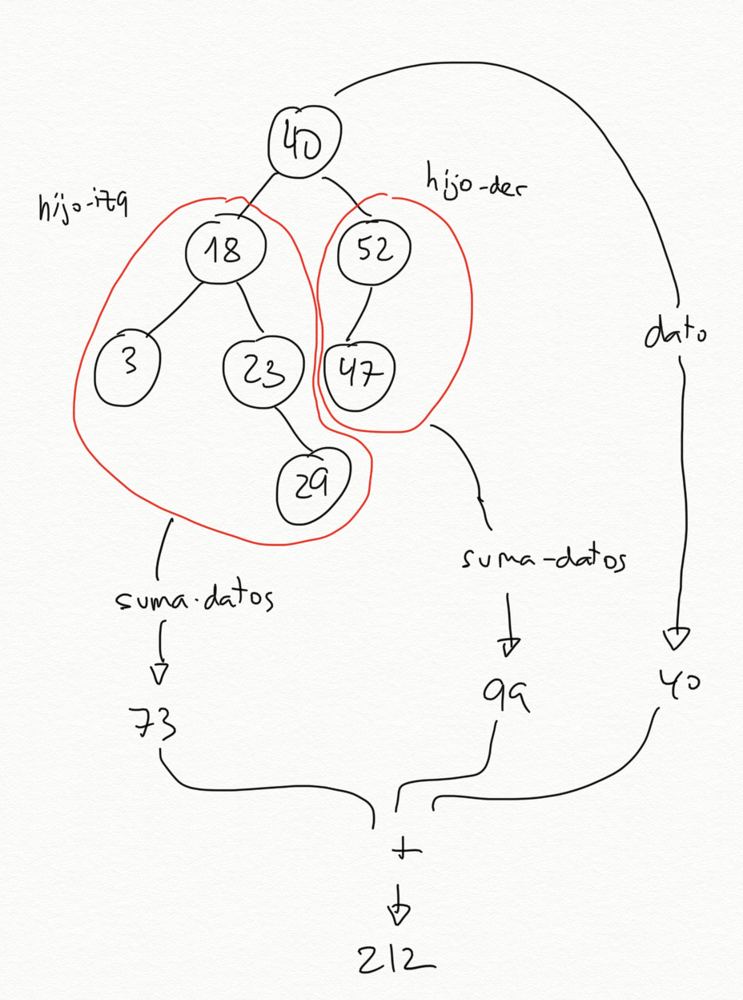

Tema 4: Estructuras de datos recursivas¶
1. Listas estructuradas¶
Hemos visto que las listas en Scheme se implementan como un estructura de datos recursiva, formada por una pareja que enlaza en su parte derecha el resto de la lista y que termina con una parte derecha en la que hay una lista vacía.
En este apartado vamos a volver a estudiar las listas desde un nivel de abstracción alto, usando las funciones:
(first lista)para obtener el primer elemento de una lista(rest lista)para obtener el resto de la lista(cons dato lista)para construir una nueva lista con el dato como primer elemento
En la mayoría de funciones y ejemplos que hemos visto hasta ahora las listas están formadas por datos y el recorrido por la lista es un recorrido lineal, iterando por sus elementos.
En este apartado vamos a ampliar este concepto y estudiar cómo trabajar con listas que contienen otras listas.
Veremos que esto cambia fundamentalmente la estructura de las listas y
de las funciones que van a operar con ellas. El cambio fundamental es
que la función first lista puede devolver dos tipos de elementos:
- Un elemento de la lista (del tipo de elementos que hay en la lista)
- Otra lista (formada por el tipo de elementos de la lista)
1.1. Definición y ejemplos¶
Las listas en Scheme pueden tener cualquier tipo de elementos, incluido otras listas.
Llamaremos lista estructurada a una lista que contiene otras sublistas. Lo contrario de lista estructurada es una lista plana, una lista formada por elementos que no son listas. Llamaremos hojas a los elementos de una lista que no son sublistas.
A las listas estructuradas cuyas hojas son símbolos se les denomina en el contexto de la programación funcional expresiones-S (S-expression).
Por ejemplo, la lista estructurada:
(a b (c d e) (f (g h)))
es una lista estructurada con 4 elementos:
- El elemento
'a, una hoja - El elemento
'b, otra hoja - La lista plana
(c d e) - La lista estructurada
(f (g h))
Se puede construir con cualquiera de las siguientes expresiones:
(define lista (list 'a 'b (list 'c 'd 'e) (list 'f (list 'g 'h))))
(define lista '(a b (c d e) (f (g h))))
Una lista formada por parejas la consideraremos una lista plana, ya que no contiene ninguna sublista. Por ejemplo, la lista
((a . 3) (b . 5) (c . 12))
es una lista plana de tres elementos (hojas) que son parejas.
1.1.1. Definiciones en Scheme¶
Vamos a escribir las definiciones anteriores de hoja, plana y
estructurada usando código de Scheme.
1.1.1.1. Función (hoja? dato)¶
Definimos una hoja como aquellos elementos de una lista estructurada que no son listas:
(define (hoja? elem)
(not (list? elem)))
Utilizaremos esta función para comprobar si un determinado elemento de una lista es o no una hoja. Por ejemplo, supongamos la siguiente lista:
((1 2) 3 4 (5 6))
Es una lista de 4 elementos, siendo el primero y el último otras sublistas y el segundo y el tercero hojas. Podemos comprobar si son o no hojas sus elementos:
(define lista '((1 2) 3 4 (5 6)))
(hoja? (first lista)) ; ⇒ #f
(hoja? (second lista)) ; ⇒ #t
(hoja? (third lista)) ; ⇒ #t
(hoja? (fourth lista)) ; ⇒ #f
La lista vacía no es una hoja
(hoja? '()) ; ⇒ #f
1.1.1.2. Función (plana? lista)¶
Como hemos dicho antes, una lista es plana cuando todos sus elementos
son hojas. Queremos implementar la función (plana? lista) que lo
compruebe.
Por ejemplo:
(plana? '(a b c d e f)) ; ⇒ #t
(plana? (list (cons 'a 1) "Hola" #f)) ; ⇒ #t
(plana? '(a (b c) d)) ; ⇒ #f
(plana? '(a () b)) ; ⇒ #f
Una definición recursiva de lista plana:
Una lista es plana si y solo si el primer elemento es una hoja y el resto es plana.
Y el caso base:
Una lista vacía es plana.
Usando esta definición recursiva, podemos implementar en Scheme la
función (plana? lista) que comprueba si una lista es plana:
(define (plana? lista)
(or (null? lista)
(and (hoja? (first lista))
(plana? (rest lista)))))
Se podría también implementar la función plana? usando la función de
orden superior for-all? que comprueba que todos los elementos de una
lista cumplen una propiedad. En esta caso, ser hoja.
(define (plana-fos? lista)
(for-all? hoja? lista))
Función for-all?
Recordemos que la función (for-all? predicado lista) se implementa
de la siguiente forma:
(define (for-all? predicado lista)
(or (null? lista)
(and (predicado (first lista))
(for-all? predicado (rest lista)))))
1.1.1.3. Función (estructurada? lista)¶
Una lista es estructurada cuando alguno de sus elementos es otra lista. Como caso base, una lista vacía no es estructurada.
Queremos implementar la función (estructurada? lista) que compruebe
si una lista es estructurada.
(estructurada? '(1 2 3 4)) ; ⇒ #f
(estructurada? (list (cons 'a 1) (cons 'b 2) (cons 'c 3))) ; ⇒ #f
(estructurada? '(a () b)) ; ⇒ #t
(estructurada? '(a (b c) d)) ; ⇒ #t
(define (estructurada? lista)
(and (not (null? lista))
(or (list? (first lista))
(estructurada? (rest lista)))))
Se podría implementar también usando la función de orden superior
exists? para consultar si algún elemento de la lista es también otra
lista.
(define (estructurada-fos? lista)
(exists? list? lista))
Función exists?
Recordemos que la función (exists? predicado lista) se implementa de
la siguiente forma:
(define (exists? predicado lista)
(if (null? lista)
#f
(or (predicado (first lista))
(exists? predicado (rest lista)))))
Realmente bastaría con haber hecho una de las dos definiciones y escribir la otra como la negación de la primera:
(define (estructurada? lista)
(not (plana? lista)))
1.1.2. Ejemplos de listas estructuradas¶
Las listas estructuradas son muy útiles para representar información jerárquica en donde queremos representar elementos que contienen otros elementos.
Por ejemplo, las expresiones de Scheme son listas estructuradas:
(= 4 (+ 2 2))
(if (= x y) (* x y) (+ (/ x y) 45))
(define (factorial x) (if (= x 0) 1 (* x (factorial (- x 1)))))
El análisis sintáctico de una oración puede generar una lista estructurada de símbolos, en donde se agrupan los distintos elementos de la oración:
((Juan) (compró) (la entrada (de la película)) (el viernes por la tarde))
Una página HTML, con sus distintos elementos, unos dentro de otros, también se puede representar con una lista estructurada:
((<h1> Mi lista de la compra </h1>)
(<ul> (<li> naranjas </li>)
(<li> tomates </li>)
(<li> huevos </li>) </ul>))
1.1.3. Pseudo árboles con niveles¶
Las listas estructuradas definen una estructura de niveles, donde la lista inicial representa el primer nivel, y cada sublista representa un nivel inferior. Los datos de las listas representan las hojas.
Por ejemplo, la representación en forma de niveles de la lista ((a b
c) d e) es la siguiente:
Cada asterisco * representa una lista. Las ramas que salen del
asterisco representan los elementos de la lista. En el ejemplo tenemos
en un primer nivel una lista con 3 elementos: la lista (a b c), d
y e. Y en el segundo nivel se encuentra la lista (a b c) cuyos 3
elementos son hojas.
Las hojas d y e están en el nivel 1 y en las posiciones
2 y 3 de la lista y las hojas a, b y c en el nivel 2.
Una lista estructurada no es un árbol
Una lista estructurada no es un árbol propiamente dicho, porque un árbol tiene datos en todos los nodos, mientras que en la lista estructurada los datos están sólo en las hojas.
Las listas estructuradas sirven para agrupar de forma jerárquica un conjunto de datos en distintos niveles.
A pesar de ser distintas de los árboles, ambas son estructuras de datos jerárquicas (con niveles) que se pueden definir de forma recursiva y sobre las que se pueden definir algoritmos recursivos. Veremos más adelante cómo definir y trabajar con árboles en Scheme.
Otro ejemplo. ¿Cuál sería la representación en niveles de la siguiente lista estructurada?:
(map (lambda (x) (+ x 10)) (quote (1 2 3 4)))

1.2. Funciones recursivas sobre listas estructuradas¶
1.2.1. Número de hojas¶
Veamos como primer ejemplo la función (num-hojas lista) que cuenta
el número de hojas de una lista estructurada.
Por ejemplo:
(num-hojas '((1 2) (3 4 (5) 6) (7))) ; ⇒ 7
Como hemos comentado antes, una cuestión clave en las funciones que
vamos a construir sobre listas estructuradas es que el first de una
lista estructurada puede ser a su vez otra lista.
Para calcular el número de hojas de una lista podemos obtener el primer elemento y el resto de la lista, y contar recursivamente el número de hojas del primer elemento y del resto. Al ser una lista estructurada, el primer elemento puede ser a su vez otra lista, por lo que llamamos a la recursión para contar sus hojas.
La definición de este caso general usando pseudocódigo es:
El número de hojas de una lista estructurada es la suma del número de hojas de su primer elemento (que puede ser otra lista) y del número de hojas del resto.
La recursión tiene dos llamadas recursivas. Una que recibe el elemento de la cabeza de la lista y otra que recibe el resto de la lista.
;Caso general num-hojas
(define (num-hojas lisdat)
; Falta caso base
(+ (num-hojas (first lisdat))
(num-hojas (rest lisdat))))
No hay coste exponencial
A pesar de haber dos llamadas recursivas, no pasa lo mismo que en Fibonacci o Pascal ya que no se van a repetir llamadas a la recursión con los mismos datos. La recursión recorre la lista estructurada y su coste será el número de elementos de la lista.
Para considerar el caso base, veamos cómo las llamadas recursivas reciben cada vez un problema más pequeño.
La llamada recursiva sobre el resto de la lista recibe cada vez una lista con 1 elemento menos. Al final se llamará a la función con una lista vacía. Ese será un caso base. El número de elementos de una lista vacía es 0.
La llamada recursiva sobre la cabeza de la lista es algo distinta. Recibe una lista en la que se ha descendido un nivel y tiene, por tanto, un nivel menos. Al final se llamará a la función con una hoja (un dato). Ese será el otro caso base y habrá que devolver 1.
La definición completa de la función queda de la siguiente forma:
(define (num-hojas lisdat)
(cond
((null? lisdat) 0)
((hoja? lisdat) 1)
(else (+ (num-hojas (first lisdat))
(num-hojas (rest lisdat))))))
Importante
Hay que hacer notar que el parámetro lisdat puede ser tanto una lista
como un dato atómico. En ese caso la función (hoja? lisdat)
devuelve #t.
En lenguajes de programación fuertemente tipados esto no
sería posible, porque la lista y el dato serían de distinto
tipo. En ese caso el código debería ser un poco más largo y antes
de llamar a la recursión habría que comprobar si el elemento es un
dato o es otra lista. En el caso de Scheme, podemos aprovecharnos
de su característica de ser débilmente tipado y podemos hacer el
código más conciso, llamando siempre a la recursión con el first
de la lista, independientemente de si es un dato u otra lista.
El código de la versión en la que comprobamos si el elemento es una lista antes de llamar a la recursión sería el siguiente:
(define (num-hojas lista)
(cond
((null? lista) 0)
((hoja? (first lista))
(+ 1 (num-hojas (rest lista))))
(else (+ (num-hojas (first lista))
(num-hojas (rest lista))))))
1.2.1.1. Versión con funciones de orden superior¶
Podemos usar también las funciones de orden superior map y
foldr para obtener una versión más concisa.
Una lista estructurada tiene como elementos en un primer nivel hojas o
otras sublistas. Podemos entonces mapear una expresión lambda que se
aplica a cada uno de esos elementos. En la expresión lambda
comprobamos si el elemento (el parámetro sublista de la expresión
lambda) es una hoja o una lista. En el primero caso devolvemos 1. En
el segundo aplicaremos la propia función que estamos definiendo
sobre la sublista, con lo que se devolverá el número de hojas de esa
sublista.
El resultado del map será una lista de números (el número de hojas de
cada componente), que podemos sumar haciendo un foldr con la
función +:
(define (num-hojas-fos ld)
(if (hoja? ld)
1
(foldr + 0 (map num-hojas-fos ld))))
Una explicación gráfica de cómo funciona la función sobre la lista (1
(2 3) (4) (5 (6 7) 8)):
Sería equivalente hacer un apply de la suma para sumar los números
de la lista devuelta por el map:
(define (num-hojas-fos ld)
(if (hoja? ld)
1
(apply + (map num-hojas-fos ld))))
Nota
Es interesante conocer ambas expresiones (la del foldr y la del
apply) porque hay lenguajes de programación en los que la función
apply no está definida. Por ejemplo, Swift.
1.2.2. Aplanar lista¶
Veamos otro ejemplo. La función (aplana lista) que devuelve una
lista plana con todas las hojas de la lista.
Por ejemplo:
(aplana '(1 2 (3 (4 (5))) (((6)))))
; ⇒ (1 2 3 4 5 6)
La solución recursiva es:
(define (aplana ld)
(cond
((null? ld) '())
((hoja? ld) (list ld))
(else
(append (aplana (first ld))
(aplana (rest ld))))))
Con funciones de orden superior:
(define (aplana-fos ld)
(if (hoja? ld)
(list ld)
(foldr append '() (map aplana-fos ld))))
Usando apply:
(define (aplana-fos ld)
(if (hoja? ld)
(list ld)
(apply append (map aplana-fos ld))))
1.2.3. Otras funciones recursivas¶
Vamos a diseñar otras funciones recursivas que trabajan con la estructura jerárquica de las listas estructuradas.
(pertenece-estruct? dato lista): busca una hoja en una lista estructurada.(cuadrado-estruct lista): eleva todas las hojas al cuadrado (suponemos que la lista estructurada contiene números).(map-estruct f lista): similar a map, aplica una función a todas las hojas de la lista estructurada y devuelve el resultado (otra lista estructurada).(altura lista): devuelve el número de niveles de una lista estructurada.(nivel-hoja dato lista): devuelve el nivel en el que se encuentra un dato en una lista.
1.2.3.1. (pertenece-estruct? dato lista)¶
Comprueba si el dato aparece en la lista estructurada.
(pertenece-estruct? 'a '(b c (d (a)))) ; ⇒ #t
(pertenece-estruct? 'a '(b c (d e (f)) g)) ; ⇒ #f
Solución recursiva:
(define (pertenece-estruct? dato ld)
(cond
((null? ld) #f)
((hoja? ld) (equal? dato ld))
(else (or (pertenece-estruct? dato (first ld))
(pertenece-estruct? dato (rest ld))))))
Con funciones de orden superior:
(define (pertenece-fos? dato ld)
(if (hoja? ld)
(equal? dato ld)
(exists? (lambda (elem)
(pertenece-fos? dato elem)) ld)))
1.2.3.2. (cuadrado-estruct lista)¶
Vamos ahora a ver un tipo de función distinta. Una que construye una lista estructurada y la devuelve.
Queremos implementar la función (cuadrado-estruct lista) que recibe
una lista estructurada y devuelve otra lista estructurada con la misma
estructura y sus números elevados al cuadrado.
Por ejemplo:
(cuadrado-estruct '(2 3 (4 (5)))) ; ⇒ (4 9 (16 (25))
La solución recursiva es:
(define (cuadrado-estruct ld)
(cond ((null? ld) '())
((hoja? ld) (* ld ld ))
(else (cons (cuadrado-estruct (first ld))
(cuadrado-estruct (rest ld))))))
Se llama a la recursión con el first y con el rest de la lista
original. El resultado de ambas llamadas serán las correspondientes
listas estructuradas con sus elementos elevados al cuadrado. Y se
devuelve la lista resultante de insertar la lista devuelta en la
llamada recursiva con el first en la primera posición de la lista
devuelta en la llamada recursiva con el rest.
Es muy interesante la versión de esta función con funciones de orden superior:
(define (cuadrado-estruct-fos ld)
(if (hoja? ld)
(* ld ld)
(map cuadrado-estruct-fos ld)))
Como una lista estructurada está compuesta de datos o de otras
sublistas podemos aplicar map para que devuelva la lista resultante
de transformar la original con la función que le pasamos como
parámetro.
1.2.3.3. (map-estruct f lista)¶
Podemos generalizar la función anterior y definir la función de orden
superior sobre listas estructuradas (map-estructurada f lista) que
devuelve una lista estructurada igual que la original con el resultado
de aplicar a cada uno de sus hojas la función f
Por ejemplo:
(map-estruct (lambda (x) (* x x)) '(2 3 (4 (5)))) ; ⇒ (4 9 (16 (25))
La solución recursiva es una generalización de la función anterior,
usando el parámetro f:
(define (map-estruct f ld)
(cond ((null? ld) '())
((hoja? ld) (f ld))
(else (cons (map-estruct f (first ld))
(map-estruct f (rest ld))))))
Solución con map:
(define (map-estruct-fos f ld)
(if (hoja? ld)
(f ld)
(map (lambda (elem)
(map-estruct-fos f elem)) ld)))
1.2.3.4. (altura lista)¶
La altura de una lista estructurada viene dada por su número de
niveles: una lista plana tiene una altura de 1, la lista ((1 2 3) 4
5) tiene una altura de 2.
Para calcular la altura de una lista estructurada tenemos que obtener (de forma recursiva) la altura de su primer elemento, y la altura del resto de la lista, sumarle 1 a la altura del primer elemento y devolver el máximo de los dos números.

Como casos base, la altura de una lista vacía o de una hoja (dato) es 0.
En Scheme:
(define (altura ld)
(cond
((null? ld) 0)
((hoja? ld) 0)
(else (max (+ 1 (altura (first ld)))
(altura (rest ld))))))
(altura '(1 (2 3) 4)) ; ⇒ 2
(altura '(1 (2 (3)) 3)) ; ⇒ 3
1.2.3.2.1. Versión con funciones de orden superior¶
Y la segunda versión, usando las funciones de orden superior map
para obtener la altura de sus elementos del primer nivel (puedes ser
hojas o sublistas) y foldr para quedarse con el máximo de la
lista de valores que devuelve el map.
(define (altura-fos ld)
(if (hoja? ld)
0
(+ 1 (foldr max 0 (map altura-fos ld)))))
Podríamos hacerlo también sustituyendo el foldr por un apply:
(define (altura-fos ld)
(if (hoja? ld)
0
(+ 1 (apply max (map altura-fos ld)))))
1.2.3.5. (nivel-hoja dato lista)¶
Veamos una última función (nivel-hoja dato lista) que recorre una
lista estructurada buscando el dato y devuelve el nivel en que se
encuentra. Si el dato no se encuentra en la lista, se devolverá -1. Si
el dato se encuentra en más de un lugar de la lista se devolverá el
nivel mayor.
Ejemplos:
(nivel-hoja 'b '(a b (c))) ; ⇒ 1
(nivel-hoja 'b '(a (b) c)) ; ⇒ 2
(nivel-hoja 'b '(a (b) d ((b)))) ; ⇒ 3
(nivel-hoja 'b '(a c d ((e)))) ; ⇒ -1
Solución recursiva:
(define (nivel-hoja dato ld)
(cond
((null? ld) -1)
((hoja? ld) (if (equal? ld dato) 0 -1))
(else (max (suma-1-si-mayor-igual-que-0
(nivel-hoja dato (first ld)))
(nivel-hoja dato (rest ld))))))
La función auxiliar se define de la siguiente forma:
(define (suma-1-si-mayor-igual-que-0 x)
(if (>= x 0)
(+ x 1)
x))
Con funciones de orden superior:
(define (nivel-hoja-fos dato ld)
(if (hoja? ld)
(if (equal? ld dato) 0 -1)
(suma-1-si-mayor-igual-que-0
(foldr max -1 (map (lambda (elem)
(nivel-hoja-fos dato elem)) ld)))))
2. Árboles¶
2.1. Definición de árboles en Scheme¶
2.1.1. Definición de árbol¶
Un árbol es una estructura de datos definida por un valor raíz, que es el padre de toda la estructura, del que salen otros subárboles hijos (Wikipedia).
Un árbol se puede definir recursivamente de la siguiente forma:
- Una colección de un dato (el valor de la raíz del árbol) y una lista de hijos que también son árboles.
- Una hoja será un árbol sin hijos (un dato con una lista de hijos vacía).
Un ejemplo de árbol:
El árbol anterior tiene como dato raíz el número 30 y tiene 3 árboles hijos:
- El primer hijo es un árbol con raíz 15 y con dos hijos hoja, el 10 y el 12
- El segundo hijo es un árbol hoja, con valor 18
- El tercer hijo es un árbol con raíz 25 y con tres hijos hoja, el 19, 21 y 22.
2.1.2. Representación de árboles con listas¶
En Scheme la lista es la estructura de datos principal. ¿Cómo podemos construir un árbol usando listas?
Podemos hacerlo de varias formas, pero escogemos la siguiente: usar una lista de n+1 elementos para representar un árbol con n hijos:

- el primer elemento la lista será el dato de la raíz
- el resto serán los árboles hijos
arbol -> (dato hijo-1 hijo-2 ... hijo-n)
Los nodos hoja (datos al final del árbol que no tienen ningún hijo) son también árboles. Al no tener hijos, se representan como listas con un único elemento, el propio dato.
Nodo hoja -> (dato)
La forma de representar el árbol anterior

será la siguiente lista:
(30 (15 (10) (12)) (18) (25 (19) (21) (22)))
Los elementos de esta lista son:

- El primer elemento es el número
30, el dato valor de la raíz del árbol - El segundo elemento es la lista
(15 (10) (12)), que representa el árbol con dato15y dos hijos - El tercer elemento es la lista
(18)que representa el árbol hoja formado por un 18 - El tercer elemento es la lista
(15 (19) (21) (22)), que representa el árbol con un dato15y tres hijos
Podríamos definir el árbol con la siguiente sentencia:
(define arbol1 '(30 (15 (10) (12)) (18) (25 (19) (21) (22))))
Otro ejemplo más. ¿Cómo se implementa en Scheme el árbol de la siguiente figura?
Se haría con la lista de la siguiente sentencia:
(define arbol2 '(40 (18 (3) (23 (29))) (52 (47))))
2.1.3. Barrera de abstracción¶
Una vez definida la forma de representar árboles, vamos a definir las funciones básicas para manejarlos. Veremos las funciones para obtener el dato y los hijos y la función para construir un árbol nuevo. Estas funciones proporcionan lo que se denomina barrera de abstracción del tipo datos árbol.
En todos los nombres de las funciones de la barrera de abstracción
añadimos el sufijo -arbol.
Definimos dos conjuntos de funciones: constructores para construir un nuevo árbol y selectores para obtener los elementos del árbol. Vamos a empezar por los selectores.
Selectores
Funciones que obtienen los elementos de un árbol:
(define (dato-arbol arbol)
(first arbol))
(define (hijos-arbol arbol)
(rest arbol))
(define (hoja-arbol? arbol)
(null? (hijos-arbol arbol)))
Es importante tener claro los tipos devueltos por las dos primeras funciones:
(dato-arbol arbol): devuelve el dato de la raíz del árbol.(hijos-arbol arbol): devuelve una lista de árboles hijos. En algunas ocasiones llamaremos bosque a una lista de árboles. Podremos recorrer esa lista usando las funcionesfirstyrestpara obtener los árboles hijos.
Volvemos a mostrar el arbol1 para comprobar estas funciones.
Las funciones anteriores devuelven los siguientes valores:
(dato-arbol arbol1) ; ⇒ 30
(hijos-arbol arbol1) ; ⇒ ((15 (10) (12)) (18) (25 (19) (21) (22)))
(hoja-arbol? (first (hijos-arbol arbol1))) ; ⇒ #f
(hoja-arbol? (second (hijos-arbol arbol1))) ; ⇒ #t
- La llamada
(dato-arbol arbol1)devuelve el dato que hay en la raíz del árbol, el número30. - La invocación
(hijos-arbol arbol1)devuelve una lista de tres elementos, los árboles hijos:- El primer elemento es la lista
(15 (10) (12)), que representa el árbol formado por el15en su raíz y las hojas10y12. - El segundo elemento es el árbol hoja
18, representado por la lista(18). - El tercero es la lista
(25 (19) (21) (22)), que representa el árbol formado por el25en su raíz y las hojas19,21y22.
- El primer elemento es la lista
Es muy importante considerar en cada caso con qué tipo de dato estamos trabajando y usar la barrera de abstracción adecuada en cada caso:
- La función
hijos-arbolsiempre devuelve una lista de árboles, que podemos recorrer usandofirstyrest. - El
firstde una lista de árboles (devuelta porhijos-arbol) siempre es un árbol y debemos de usar las funciones de su barrera de abstracción:dato-arbolehijos-arbol. - La función
dato-arboldevuelve un dato, del tipo que guardemos en el árbol. En el caso del árbol ejemplo es un número.
Por ejemplo, para obtener el número 12 en el árbol anterior tendríamos
que hacer lo siguiente: acceder al primer elemento de la lista de
hijos, después al segundo hijo de éste y por último acceder a su
dato. Recordemos que hijos-arbol devuelve la lista de árboles hijos,
por lo que utilizaremos las funciones first y rest para recorrerlas y
obtener los elementos que nos interesen:
(dato-arbol (second (hijos-arbol (first (hijos-arbol arbol1)))))
; ⇒ 12
Constructor
Definimos una función constructora que abstrae la construcción de un árbol y encapsula su implementación concreta. Para construir un árbol necesitamos un dato y una lista de árboles hijos. Si la lista de árboles hijos es vacía, tendremos un nodo hoja.
(define (construye-arbol dato lista-arboles)
(cons dato lista-arboles))
Llamaremos a la función construye-arbol pasando su dato
(obligatorio) y la lista de arboles hijos. Si se pasa una lista vacía
como parámetro estaremos definiendo un nodo hoja.
Por ejemplo, para definir un nodo hoja con el dato 2:
(define arbol3 (construye-arbol 2 '()))
Y para definir un árbol con 3 hijos:
(define arbol4 (construye-arbol 10 (list (construye-arbol 2 '())
(construye-arbol 5 '())
(construye-arbol 9 '())))
El árbol 1 anterior se puede construir con las siguientes llamadas al constructor. Guardamos los árboles hijos en variables auxiliares para hacer más entendible la expresión:
(define arbol-15 (construye-arbol 15 (list (construye-arbol 10 '())
(construye-arbol 12 '()))))
(define arbol-18 (construye-arbol 18 '()))
(define arbol-25 (construye-arbol 25 (list (construye-arbol 19 '())
(construye-arbol 21 '())
(construye-arbol 22 '()))))
(define arbol1b (construye-arbol 30 (list arbol-15 arbol-18 arbol-25)))
arbol1b ; ⇒ (30 (15 (10) (12)) (18) (25 (19) (21) (22)))
2.1.4. Barreras de abstracción de árboles y listas estructuradas¶
Es importante diferenciar la barrera de abstracción de los árboles de la de las listas estructuradas. Aunque un árbol se implementa en Scheme con una lista estructurada, a la hora de definir funciones sobre árboles hay que trabajar con las funciones definidas arriba.
El siguiente esquema resumen las características de los selectores de la barrera de abstracción de listas y árboles:

Importante
Debemos usar la barrera de abstracción al trabajar con árboles porque así separamos nuestro código de la implementación subyacente del tipo de dato. De esta forma es posible cambiar la implementación del tipo de dato sin afectar a las funciones que hemos definido usando la barrera. Lo único que hay que hacer es cambiar la implementación de la barrera de abstracción.
Otras ventajas de utilizar la barrera de abstracción, tan importantes como la anterior, son:
-
El código es mucho más legible. Dado que Scheme es un lenguaje débilmente tipado, en una expresión como
(dato-arbol elem)sabemos que el el elemento sobre el que se trabaja es un árbol (no es un número, ni un string, ni un booleano). -
El código es trasladable a cualquier lenguaje de programación. Si queremos trabajar con árboles en JavaScript, por ejemplo, sólo tendremos que implementar la barrera de abstracción en este lenguaje. Una vez hecho eso todas las funciones que trabajan con árboles, como las que veremos a continuación, funcionarán correctamente.
2.2. Funciones recursivas sobre árboles¶
Vamos a diseñar las siguientes funciones recursivas:
(suma-datos-arbol arbol): devuelve la suma de todos los nodos(to-list-arbol arbol): devuelve una lista con los datos del árbol(cuadrado-arbol arbol): eleva al cuadrado todos los datos de un árbol manteniendo la estructura del árbol original(map-arbol f arbol): devuelve un árbol con la estructura del árbol original aplicando la función f a subdatos.(altura-arbol arbol): devuelve la altura de un árbol
Todas comparten un patrón similar de recursión mutua.
2.2.1. Función suma-datos-arbol¶
Vamos a implementar una función recursiva que sume todos los datos de un árbol.
Un árbol siempre va a tener un dato y una lista de hijos (que puede
ser vacía) que obtenemos con las funciones dato-arbol e
hijos-arbol. Podemos plantear entonces el problema de sumar los datos
de un árbol como la suma del dato de su raíz y lo que devuelva la
llamada a una función auxiliar que sume los datos de su lista de hijos
(llamamos bosque a una lista de hijos):
(define (suma-datos-arbol arbol)
(+ (dato-arbol arbol)
(suma-datos-bosque (hijos-arbol arbol))))
Esta función suma los datos de un árbol. La podemos utilizar entonces para construir la siguiente función que suma una lista de árboles:
(define (suma-datos-bosque bosque)
(if (null? bosque)
0
(+ (suma-datos-arbol (first bosque)) (suma-datos-bosque (rest bosque)))))
Podemos visualizar el funcionamiento de la suma-datos-bosque en la
siguiente figura:

El caso general de la función obtiene el primer árbol de la lista (un
árbol) y llama a la función suma-datos-arbol para obtener la suma de
sus datos. También obtiene el resto del bosque (otra lista de árboles)
y llama de forma recursiva a la propia función para sumar todos sus
árboles.
Tenemos una recursión mutua: para sumar los datos de una lista de
árboles llamamos a la suma de un árbol individual que a su vez llama a
la suma de sus hijos, etc. La recursión termina cuando calculamos la
suma de un árbol hoja. Entonces se pasa a suma-datos-bosque una
lista vacía y ésta devolverá 0.
(suma-datos-arbol arbol1) ; ⇒ 172
Versión alternativa con funciones de orden superior
Al igual que hacíamos con las listas estructuradas, es posible conseguir una versión más concisa y elegante utilizando funciones de orden superior:
(define (suma-datos-arbol-fos arbol)
(foldr +
(dato-arbol arbol)
(map suma-datos-arbol-fos (hijos-arbol arbol))))
La función map aplica la propia función que estamos definiendo
(suma-datos-arbol-fos) a cada uno de los árboles hijos (obtenidos
con la función (hijos-arbol arbol)). Confiando en que la función
hace su trabajo, devolverá para cada arbol hijo la suma de todos sus
nodos. De esta forma, el resultado de map será una lista con la suma
de los nodos de todos los árboles hijos.
La función foldr suma todos esos números de la lista y el
número de la raíz.
Nota
Puede parecer que a la función anterior le falta un caso
base. ¿Cuándo termina la recursión? La respuesta está en el
funcionamiento de map, que cuando recibe una lista vacía
devuelve también una lista vacía. Para comprobarlo, puedes pensar en
qué pasaría si le pasas a la función un árbol hoja.
Un ejemplo de su funcionamiento sería el siguiente:
(suma-datos-arbol-fos '(1 (2 (3) (4)) (5) (6 (7)))) ⇒
(foldr +
1
(map suma-datos-arbol-fos '((2 (3) (4))
(5)
(6 (7))))) ⇒
(foldr + 1 '(9 5 13)) ⇒
28
- El árbol que queremos sumar tiene un 1 en la raíz y tres hijos:
(2 (3) (4)),(5)y(6 (7)). - La aplicación de
map suma-datos-arbol-fossobre la lista de hijos devuelve una lista con la suma de los nodos de cada hijo:(9 5 13). - La función
foldrsuma esa lista y el valor del nodo raíz (1).
Podemos visualizar gráficamente el funcionamiento del map con la
siguiente figura:
2.2.2. Función to-list-arbol¶
Queremos diseñar una función (to-list-arbol arbol) que devuelva una
lista con los datos del árbol en un recorrido preorden (primero el
dato de la raíz y después el dato de sus hijos de izquierda a derecha).
La solución, siguiendo el patrón visto en suma-datos, es la siguiente.
(define (to-list-arbol arbol)
(cons (dato-arbol arbol)
(to-list-bosque (hijos-arbol arbol))))
(define (to-list-bosque bosque)
(if (null? bosque)
'()
(append (to-list-arbol (first bosque))
(to-list-bosque (rest bosque)))))
Igual que antes, la función utiliza una recursión mutua: para listar
todos los nodos, añadimos el dato a la lista de nodos que nos devuelve
la función to-list-bosque. Esta función coge una lista de árboles
(un bosque) y devuelve la lista preorden de sus nodos. Para ello,
concatena la lista de los nodos de su primer elemento (el primer
árbol) a la lista de nodos del resto de árboles (que devuelve la
llamada recursiva).
Ejemplo:
(to-list-arbol '(* (+ (5) (* (2) (3)) (10)) (- (12))))
; ⇒ (* + 5 * 2 3 10 - 12)
Una definición alternativa usando funciones de orden superior:
(define (to-list-arbol-fos arbol)
(cons (dato-arbol arbol)
(foldr append '() (map to-list-arbol-fos (hijos-arbol arbol)))))
Esta versión es muy elegante y concisa. Usa la función map que
aplica una función a los elementos de una lista y devuelve la lista
resultante. Como lo que devuelve (hijos-arbol arbol) es precisamente
una lista de árboles podemos aplicar a sus elementos cualquier función
definida sobre árboles. Incluso la propia función que estamos
definiendo (¡confía en la recursión!).
2.2.3. Función cuadrado-arbol¶
Veamos ahora la función (cuadrado-arbol arbol) que toma un árbol de
números y devuelve un árbol con la misma estructura y sus datos
elevados al cuadrado:
(define (cuadrado-arbol arbol)
(construye-arbol (cuadrado (dato-arbol arbol))
(cuadrado-bosque (hijos-arbol arbol))))
(define (cuadrado-bosque bosque)
(if (null? bosque)
'()
(cons (cuadrado-arbol (first bosque))
(cuadrado-bosque (rest bosque)))))
Ejemplo:
(cuadrado-arbol '(2 (3 (4) (5)) (6)))
; ⇒ (4 (9 (16) (25)) (36))
Versión 2, con la función de orden superior map:
(define (cuadrado-arbol-fos arbol)
(construye-arbol (cuadrado (dato-arbol arbol))
(map cuadrado-arbol-fos (hijos-arbol arbol))))
2.2.4. Función map-arbol¶
La función map-arbol es una función de orden superior que generaliza
la función anterior. Definimos un parámetro adicional en el que se
pasa la función a aplicar a los elementos del árbol.
(define (map-arbol f arbol)
(construye-arbol (f (dato-arbol arbol))
(map-bosque f (hijos-arbol arbol))))
(define (map-bosque f bosque)
(if (null? bosque)
'()
(cons (map-arbol f (first bosque))
(map-bosque f (rest bosque)))))
Ejemplos:
(map-arbol cuadrado '(2 (3 (4) (5)) (6)))
; ⇒ (4 (9 (16) (25)) (36))
(map-arbol (lambda (x) (+ x 1)) '(2 (3 (4) (5)) (6)))
; ⇒ (3 (4 (5) (6)) (7))
Con map:
(define (map-arbol-fos f arbol)
(construye-arbol (f (dato-arbol arbol))
(map (lambda (x)
(map-arbol-fos f x)) (hijos-arbol arbol))))
2.2.5. Función altura-arbol¶
Vamos por último a definir una función que devuelve la altura de un árbol.
Recordemos las siguientes definiciones relacionadas con los árboles:
- Longitud de un camino entre dos nodos: número de aristas.
- Altura de un nodo: longitud del camino más largo del nodo a una hoja.
- Profundidad de un nodo: longitud del camino de la raíz al nodo.
- Profundidad de un árbol: profundidad del nodo más profundo.
- Nivel de un nodo: número de predecesores.
- Altura de árbol: altura de la raíz.
Podemos implementar la altura de una forma similar a como hicimos con las listas estructuradas: calculamos la altura de los árboles hijos, nos quedamos con la mayor, y sumamos 1 para añadir la arista del camino de la raíz al hijo.
La mayor altura de los hijos la calculamos con la función
altura-bosque.
(define (altura-arbol arbol)
(if (hoja-arbol? arbol)
0
(+ 1 (altura-bosque (hijos-arbol arbol)))))
(define (altura-bosque bosque)
(if (null? bosque)
0
(max (altura-arbol (first bosque))
(altura-bosque (rest bosque)))))
Ejemplos:
(altura-arbol '(2)) ; ⇒ 0
(altura-arbol '(4 (9 (16) (25)) (36))) ; ⇒ 2
La solución con funciones de orden superior es similar a la que vimos con listas estructuradas:
(define (altura-arbol-fos arbol)
(if (hoja-arbol? arbol)
0
(+ 1 (foldr max 0
(map altura-arbol-fos (hijos-arbol arbol))))))
La función map mapea sobre los árboles hijos la propia función, que
calcula la altura de cada hijo (será uno menos que la altura del padre, 0
si se trata de una hoja).
La función map devuelve entonces una lista altura de los hijos, de
la que obtenemos el máximo plegando la lista con la función max.
Por último sumamos 1 para devolver la altura del árbol completo (un nivel más que el nivel máximo de los hijos).
3. Arboles binarios¶
3.1. Definición de árboles binarios en Scheme¶
Los árboles binarios son árboles cuyos nodos tienen 0, 1 o 2 hijos. Por ejemplo, el árbol mostrado en la siguiente figura es un árbol binario.

A diferencia de los árboles genéricos vistos anteriormente un árbol binario no puede tener más de dos hijos.
Los representaremos en Scheme utilizando una lista de tres elementos:
- Dato
- Hijo izquierdo (otro árbol binario)
- Hijo derecho (otro árbol binario)
En el caso en que no exista el hijo izquierdo o el derecho (o ambos) utilizaremos una lista vacía para indicar un nodo vacío.
De esta manera, un nodo hoja con el dato 10 se representará en Scheme con la lista:
(10 () ())
Por ejemplo, representamos el árbol de la figura anterior con la siguiente lista:
(40 (18 (3 () ())
(23 ()
(29 () ())))
(52 (47 () ())
()))
Visualmente lo podemos representar de la siguiente forma. La no existencia de un hijo izquierdo o un hijo derecho se representa por una lista vacía.
3.1.1. Barrera de abstracción¶
Definimos la siguiente barrera de abstracción para los árboles
binarios. Terminamos todos los nombres de las funciones con el sufijo
-arbolb (árbol binario).
Selectores
Los selectores de la barrera de abstracción del árbol binario son los siguientes.
(define (dato-arbolb arbol)
(first arbol))
(define (hijo-izq-arbolb arbol)
(second arbol))
(define (hijo-der-arbolb arbol)
(third arbol))
(define arbolb-vacio '())
(define (vacio-arbolb? arbol)
(equal? arbol arbolb-vacio))
(define (hoja-arbolb? arbol)
(and (vacio-arbolb? (hijo-izq-arbolb arbol))
(vacio-arbolb? (hijo-der-arbolb arbol))))
Como parte de la barrera de abstracción definimos la constante
arbolb-vacio, que toma el valor de una lista vacía.
Constructor
(define (construye-arbolb dato hijo-izq hijo-der)
(list dato hijo-izq hijo-der))
Por ejemplo, para construir un árbol con 10 en la raíz y 8 en su hijo izquierdo y 15 en su derecho utilizando el constructor de la barrera de abstracción:
(define arbolb1
(construye-arbolb 10 (construye-arbolb 8 arbolb-vacio arbolb-vacio)
(construye-arbolb 15 arbolb-vacio arbolb-vacio)))
Otro ejemplo, el árbol binario de la figura anterior utilizando el constructor de la barrera de abstracción:
(define arbolb2
(construye-arbolb 40
(construye-arbolb 18
(construye-arbolb 3 arbolb-vacio arbolb-vacio)
(construye-arbolb 23
arbolb-vacio
(construye-arbolb 29
arbolb-vacio
arbolb-vacio)))
(construye-arbolb 52
(construye-arbolb 47 arbolb-vacio arbolb-vacio)
arbolb-vacio)))
3.2. Funciones recursivas sobre árboles binarios¶
Veamos las siguientes funciones recursivas sobre árboles binarios:
(suma-datos-arbolb arbol): devuelve la suma de todos los nodos(to-list-arbolb arbol): devuelve una lista con los datos del árbol(cuadrado-arbolb arbol): eleva al cuadrado todos los datos de un árbol manteniendo la estructura del árbol original
Estas funciones utilizan una mezcla de los patrones usados en la recursión para trabajar con árboles genéricos y la recursión para trabajar con listas estructuradas. Tenemos un dato en la raíz, que tenemos que combinar con lo que devuelve la recursión aplicada sobre el hijo izquierdo y lo que devuelve la recursión aplicada sobre el hijo derecho.
suma-datos-arbolb
(define (suma-datos-arbolb arbol)
(if (vacio-arbolb? arbol)
0
(+ (dato-arbolb arbol)
(suma-datos-arbolb (hijo-izq-arbolb arbol))
(suma-datos-arbolb (hijo-der-arbolb arbol)))))
(suma-datos-arbolb arbolb2) ; ⇒ 212
Como el hijo izquierdo y el hijo derecho son también árboles binarios, podemos llamar a la recursión con esos árboles. Esas llamadas recursivas nos devolverán la suma de los datos en cada subárbol. Y sumamos el dato de la raíz.
Para definir el caso base, podemos ver que en cada llamada recursiva vamos obteniendo el hijo izquierdo y el hijo derecho. Al final llegaremos a un árbol vacío, en cuyo caso devolvemos 0.
La siguiente figura representa el funcionamiento del caso general.

to-list-arbolb
La función to-list-arbolb es similar a la vista con los árboles
genéricos. Recibe un árbol binario y devuelve una lista con los datos
en un recorrido preorden.
(define (to-list-arbolb arbol)
(if (vacio-arbolb? arbol)
'()
(cons (dato-arbolb arbol)
(append (to-list-arbolb (hijo-izq-arbolb arbol))
(to-list-arbolb (hijo-der-arbolb arbol))))))
(to-list-arbolb arbolb2) ; ⇒ (40 18 3 23 29 52 47)
El funcionamiento es similar a la suma: llamamos a la recursión por la
izquierda y por la derecha. El resultado de las llamadas recursivas
serán dos listas que tenemos que concatenar con append. Y por
últimos añadimos en cabeza el dato de la raíz con cons.
cuadrado-arbolb
Por último, la función cuadrado-arbolb construye un nuevo árbol
binario elevando al cuadrado el dato de la raíz, su hijo izquierdo y
su hijo derecho. Para construir el árbol binario llamamos al
constructor construye-arbolb.
(define (cuadrado-arbolb arbol)
(if (vacio-arbolb? arbol)
arbolb-vacio
(construye-arbolb (cuadrado (dato-arbolb arbol))
(cuadrado-arbolb (hijo-izq-arbolb arbol))
(cuadrado-arbolb (hijo-der-arbolb arbol)))))
(cuadrado-arbolb arbolb1) ; ⇒ (100 (64 () ()) (225 () ()))
4. Bibliografía - SICP¶
En este tema explicamos conceptos de los siguientes capítulos del libro Structure and Intepretation of Computer Programs:
Lenguajes y Paradigmas de Programación, curso 2024-25
© Departamento Ciencia de la Computación e Inteligencia Artificial, Universidad de Alicante
Domingo Gallardo, Cristina Pomares, Antonio Botía, Francisco Martínez